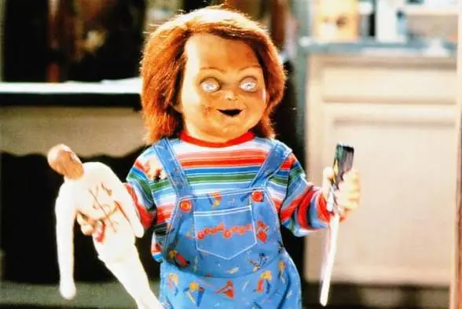

Child’s Play (Chucky-1988) — CERTIFIED MGC XF-49

🏛 MGC LOWER COURT OF APPEALS
- ASSET TITLE: Child’s Play (1988) – The Good Guy Voodoo Metallurgy Ledger
- PREMIUM BASE GRADE: Certified MGC XF-49 (Choice Extremely Fine / Near-AU Threshold)
- CORE CLASSIFICATION: High-Luster Practical Horror / Vintage Slasher Realism
- CASE FILE: #030
- PRESIDING: Judge Mina, Chief Grader MGC
📜 THE INITIAL INQUEST & FORENSIC LOG
Under our strict 5x numismatic magnifying lens, Child’s Play exhibits monumental striking power in its first two acts, showcasing Kevin Yagher’s pristine animatronic engineering and an incredibly dark, gritty Chicago backdrop. However, the film carries a few distinct structural blemishes and layout scuffs that prevent it from breaking into an uncirculated Mint State vault.
🚨 Key Planchet Flaws:
1. The Voodoo Incantation Loophole (Narrative Flatness)
-
The Flaw:
The script introduces a highly volatile, uncalibrated mystical mechanic in the opening sequence to force the killer’s soul into the doll chassis. -
The Forensic Data:
While Brad Dourif’s performance as Charles Lee Ray delivers a towering, high-grade strike, his reliance on the Damballa voodoo incantation represents a sharp drop in logical narrative luster. The sudden shift from a gritty, street-level Chicago detective thriller into instant, unpolished occult fantasy creates localized friction. The screenplay fails to establish any prior atmospheric groundwork for this mystical element, forcing the planchet to rely on an immediate plot convenience just to get the continuous linear engine running.
2. Third-Act Humanization Fatigue (The Material Breakdown)
-
The Flaw:
As Chucky spends more time inside the Good Guy doll, the narrative logic mandates that he physically transforms into a human, creating severe pacing leaks. The Forensic Data:
Under closer inspection under the strict 5x lens, the film’s structural integrity suffers a noticeable pacing bottleneck when Chucky visits his old voodoo mentor, John. The rule that Chucky “is turning human” and can actually feel physical pain is introduced solely to make him vulnerable for the final confrontation. This localized script adjustment fractures the terrifying, unyielding psychological momentum built up during the playground and apartment sequences, causing the thriller’s continuous linear velocity to experience a temporary mid-act freeze.
📜 THE RECOVERED FORENSIC LOG: THE ANDY BARCLAY FLICKER
While the 1980s animatronic striking power is groundbreaking, the film’s continuous linear velocity and psychological tension completely fracture due to severe character logic short-circuiting regarding 6-year-old Andy Barclay (Alex Vincent). The High Bench logs two major defects on the boy’s script profile:
1. The Pedestrian Commute Absurdity (The 4-Mile Pacing Freeze)
-
The Defect:
A six-year-old boy navigating the brutal winter landscape of Chicago’s public transit network completely solo based on a doll’s request. The Forensic Lens:
In a massive act-two layout scuff, Chucky convinces Andy to ditch school, sneak out of his apartment, and board the Chicago CTA El train to travel miles across the city to a rough neighborhood so Chucky can hunt down his old partner, Eddie Caputo. The script asks the public consensus gallery to suspend all physical logic. A sheltered six-year-old child cannot flawlessly navigate a major urban metro rail system, cross multiple busy intersections, and wait outside a criminal hideout in freezing weather without a single adult, police officer, or transit worker intervening. This logic bleed halts the film’s realistic suspense, exposing clear writing fatigue.
2. The Institutional Compliance Silence (The Psychiatric Alloy Failure)
-
The Defect:
Andy’s complete inability to communicate baseline self-preservation details to authorities once placed in the children’s crisis center. -
The Forensic Lens:
After being institutionalized by Dr. Ardmore, Andy knows with absolute certainty that a homicidal possessed toy is actively tracking him down to steal his body. Instead of demonstrating high-velocity psychological survival rhetoric—like screaming for security, explaining how the doll moves, or barricading the door properly—the kid’s character alloy goes completely flat. His blank, passive compliance during the asylum sequence creates a massive narrative drag. It forces a cheap, highly predictable slasher setup where Chucky can easily slip through a window, short-circuit Dr. Ardmore’s medical hardware, and force a chaotic third-act chase loop that permanently marks up the planchet canvas.
🔍 THE CERTIFIED CONSENSUS VERDICT
- Groundbreaking for its mechanical puppetry, but permanently capped at Certified MGC XF-49 (Choice Extremely Fine
It is an elite, highly collectible circulated item, but it stays firmly out of the Mint State vaults. Case Closed.

• © 2026 MOVIE GRADING CONSENSUS. All Sovereign Rights Reserved.